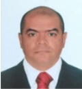

Gerson Peña Oviedo, Santiago de Cali 1973, actualmente de profesión como Soporte Técnico en sitio y remoto.Graduado del Centro Colombiano de Estudios Profesionales C.E.C.E.P como Tecnólogo en Sistemas en la ciudad de Cali. Nacido del seno de una familia de clase media, siendo el tercer hijo de Oscar Peña Q.D.E.P nacido en Cali y Fabiola Oviedo nacida en Honda Tolima. Gracias a su educación y valores inculcados de sus padres siempre ha manejado el sentido de responsabilidad, lealtad y compromiso con su familia y trabajo donde ha estado.
Casado con Claudia Patricia Agudelo Carmona Tecnóloga de Administración y Finanzas del Centro Superior, actualmente labora para una empresa de elaboración de medicamentos farmacéuticos. De este matrimonio nace Santiago Peña Agudelo un joven de 18 años el cual es estudiante universitario donde cursa tercer semestre de Ingeniería Multimedia.
- Actualmente cursando un diplomado en Desarrollo Web Full Stack Front End + Back End en la universidad de Cataluña.
- Graduado como Tecnólogo de sistemas del C.E.C.E.P
- Curso actualización de conocimientos SQL, Servicios de Dominio Active Directory, Redes de Datos, Microsoft 365. Plataforma Virtual UDEMY
- Certificación ITIL V4 Fundamentación. CCTI Consultoría en Tecnología
- Curso de Capacitación Virtual - Técnico en Instalación y Reparación Equipo de Cómputo. Capacítese para el Empleo Fundación Carlos Slim.
- Se ha desempeñado como Técnico de Soporte TI
Si quieres saber mas de los Hobbies... presiona para ver mas!Hobbies y mas